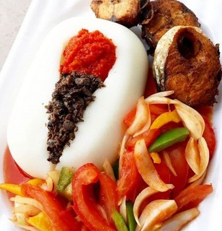
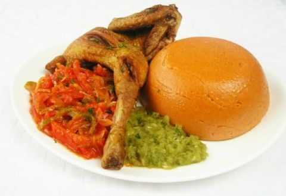
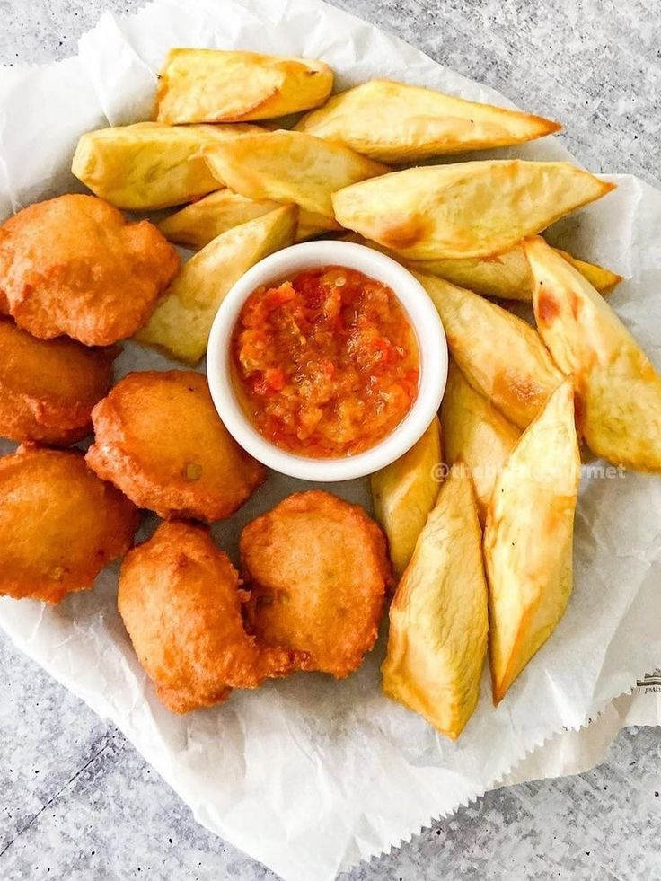
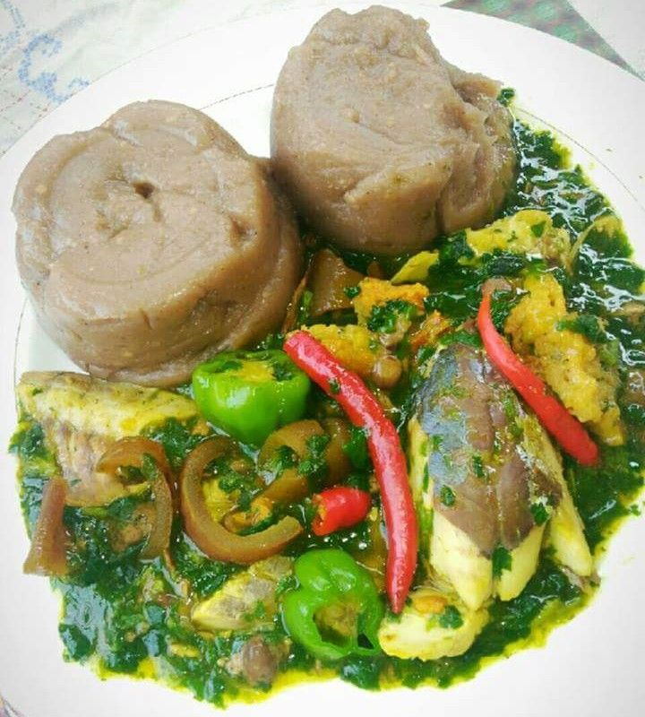
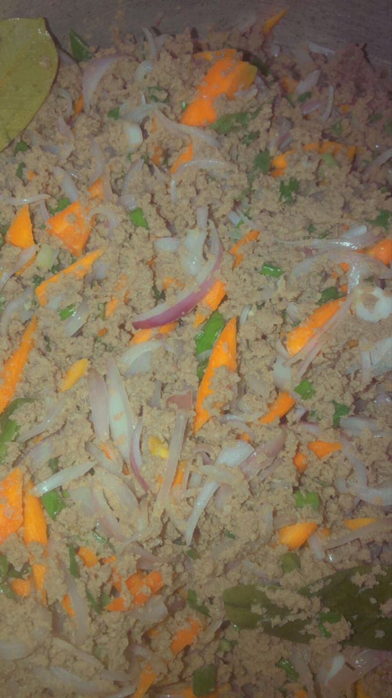
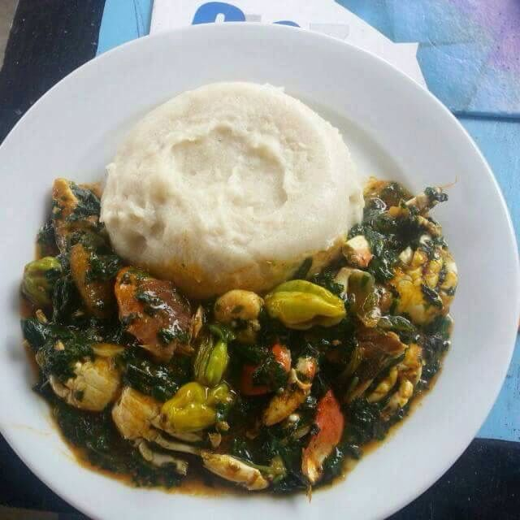
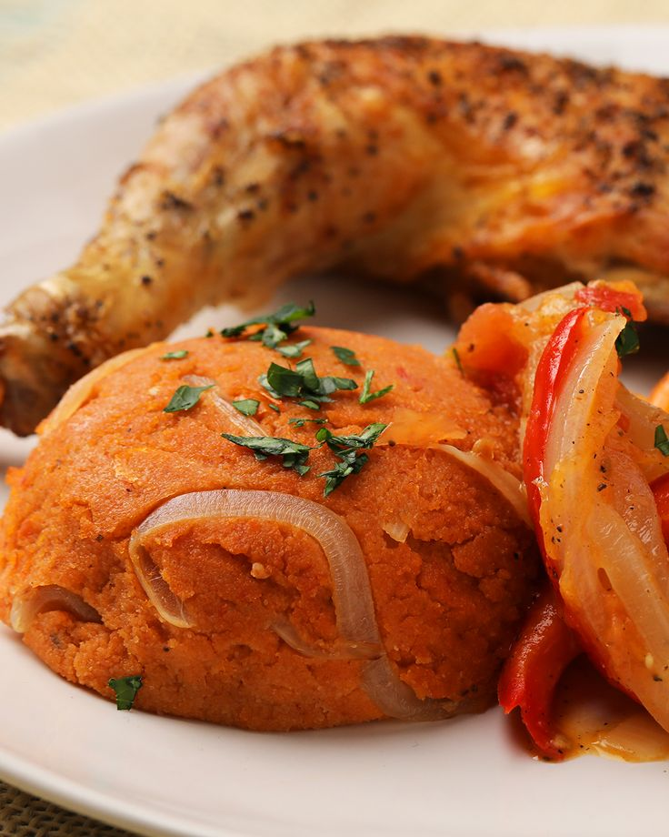

Saveurs locales
Savourez l’âme du Bénin dans chaque bouchée.
De l’amiwo rouge éclatant à la douceur du gari, des sauces
parfumées aux boissons locales, la gastronomie béninoise
est un festival de couleurs et de goûts. Plus qu’un repas,
c’est une expérience sensorielle, un voyage au cœur de nos
traditions culinaires… à déguster sans modération !
Explorez les plats typiques, les spécialités régionales.
Présentation des plats typiques (amiwo, sauce arachide, akassa, tchoukoutou...)






